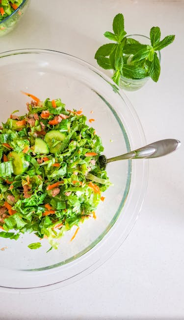

← Back to all nutrition guides
What To Eat At Night When Trying To Lose Weight
A realistic guide for busy professionals over 40.
Eating at night while trying to lose weight can be challenging, especially for men aged 40 to 65 who want to maintain a healthy lifestyle without the hassle of calorie counting. The choices you make during these evening hours can significantly impact your weight loss journey. By opting for lighter, nutritious options, you can enjoy your meals and support your body’s natural rhythms. In this article, we will explore what to eat at night when trying to lose weight and provide practical strategies to help you make better food choices. Emphasizing wholesome snacks and meals that nourish your body will make it easier to stick to your weight loss goals while ensuring you feel satisfied and energized.
Want a personalized version of this strategy?
Try the AI Food Coach
Why What To Eat At Night When Trying To Lose Weight Matters
Making healthy choices at night is crucial for weight management, particularly for men aged 40-65 who may face unique metabolic changes. As metabolism slows down with age, the types of foods consumed during the evening can lead to unwanted weight gain. Late-night eating habits often involve high-calorie and processed foods that are low in nutrients, which can derail weight loss efforts. Choosing the right foods at night can help prevent overeating, regulate blood sugar levels, and reduce cravings for unhealthy snacks. Furthermore, focusing on nutritious options can improve sleep quality, enhance the body's recovery processes, and support overall health. By consciously selecting what to eat at night, you can avoid the pitfalls often associated with late meals, paving the way toward a more sustainable approach to weight loss.
Simple Strategy
- Opt for high-protein snacks, such as Greek yogurt or cottage cheese, which promote satiety.
- Choose fiber-rich foods like fruits and vegetables that help to curb hunger and provide essential nutrients.
- Drink herbal tea to keep yourself hydrated without adding calories and to aid digestion.
These strategies work best when personalized to your lifestyle and goals.
Build Your Personalized Nutrition Plan
Most people know what foods are healthy. The hard part is knowing what to eat today. Today's Food Coach creates a simple, personalized daily plan based on your goals and lifestyle.
Start Your PlanExample Day of Eating
Start your day with a hearty breakfast, such as oatmeal topped with berries. Enjoy a balanced lunch with lean protein and plenty of vegetables. For dinner, consider a serving of grilled salmon with steamed broccoli. In the evening, you might choose a small bowl of Greek yogurt mixed with a handful of nuts or some sliced apple for a satisfying night snack.
Common Mistakes
- Eating late-night snacks that are high in sugar or refined carbs can lead to weight gain.
- Skipping dinner altogether to 'save' calories for snacks often results in overeating later.
- Choosing heavy, rich foods before bed can disrupt sleep and hinder weight loss efforts.
Practical Tips
- Prepare healthy snacks in advance to avoid impulsive, unhealthy choices.
- Establish a regular eating schedule to prevent late-night hunger pangs.
- Practice portion control by using smaller bowls to help manage servings.
Frequently Asked Questions
Is it okay to eat before bed?
Yes, as long as you choose healthy, light options that won't lead to weight gain.
Can a late-night snack help with sleep?
Certain snacks, like those high in magnesium or tryptophan, can support better sleep.
What are some healthy nighttime snack options?
Healthy options include Greek yogurt, a small handful of nuts, or sliced vegetables with hummus.
Related Nutrition Guides
- How To Stop Stress Eating At Night
- How To Lose Weight Without Dieting After 40
- Simple Weight Loss Strategies For Men Over 45
Try Today's Food Coach
Generate a personalized meal strategy based on your lifestyle and goals.
Try the AI Food Coach